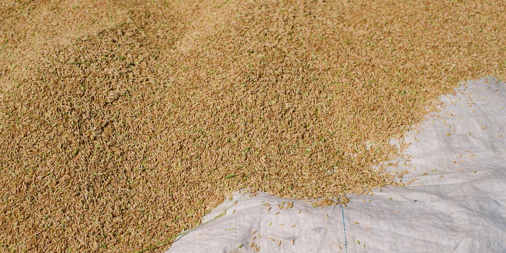
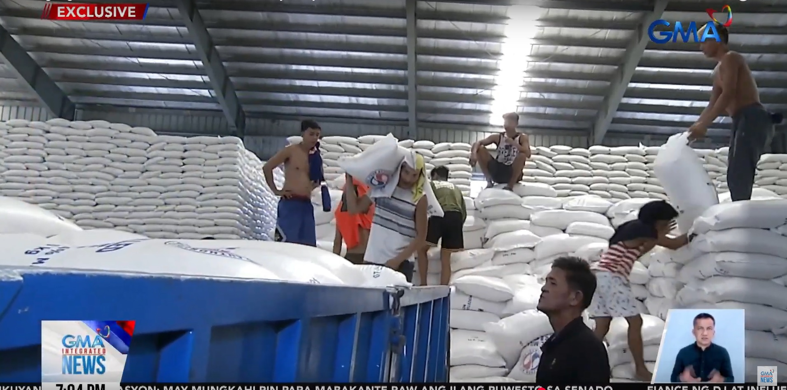

Tape
SM Nuvali locks Nov 27 — 82k sqm GLA, 1-ha air-conditioned indoor garden, fifth and largest SM in Laguna; H1 mall occupancy 96%, revenue +8% to P41.8B, casual dining among strongest. PSA: Aug rice inventory 2.18M MT (−6.3% YoY; −13.3% MoM); NFA depositories −32.2% YoY to 306.8k MT; commercial holds 47.5%. NFA Admin Lacson: only ~22–23% of 790k MT palay buy target, wet harvest can’t dry, buffer ~8 days; wet floor P21/kg. DA storm tally up to P3.62B (Luis/Maymay/Neneng + Habagat): 86,466 farmers, 74,809 ha, 87,745 MT lost — rice P1.90B / 59,872 MT; CALABARZON on the list; 29% of area written off.
For Calamba: Nuvali is your Nov catchment clock — lease or fight for traffic before soft open, not after. Rice: commercial still owns nearly half the stock while NFA is behind on wet palay — keep Q1 locks, don’t bank on Benteng for kitchen volume. Storm: CALABARZON production hole means veg and rice quotes can jump before Mindanao backfill arrives — check this week’s produce invoices.
SM Nuvali: Nov 27, not “sometime late”
1 Sep 2026
SM Supermalls set a hard open for SM Nuvali on November 27 — about 82,000 sqm GLA, the group’s 91st PH mall and its fifth and largest in Laguna. Centerpiece is a ~1-hectare indoor garden that is itself air-conditioned: two-layer membrane lets sunlight in, traps heat between layers, exhausts it — Tan compared the tech to Singapore’s Gardens by the Bay. Restaurants ring the greenery. Steven Tan (midyear briefing): moving off “cookie-cutter” boxes; architecture should adapt to the local community. Laguna context he cited: first PH province over P1T economic output (2023 PSA). Portfolio tell: H1 occupancy hit a record 96%; mall revenue +8% YoY to P41.8B; same-store +4.8%. Casual dining called out as a top segment as SM leans experience (pickleball, running hubs, food halls). Near-term expansions: SM City Sto. Tomas (Batangas) ~+30% GLA with a “Green Haven”; Iloilo +46k sqm; Naga two-story add. Next-year opens named: Tagum, General Trias; Bohol and Malolos in prep. Opener read: this is Calamba/Sta. Rosa catchment with a calendar date. Chains will take the garden ring; independents win on estate-edge, office lunch, and SLEX/CALAX service — price the rent against weekend pull starting mid-November, not January.
Open Rappler · Open Inside Retail

Rice: inventory −6.3%, NFA only ~23% bought
6 Sep 2026
PSA: total rice inventory as of August fell to 2.18 million MT, −6.3% from 2.32M a year earlier and −13.3% from July’s 2.51M. Split: commercial 47.5%, households 38.4%, NFA depositories 14.1%. NFA stocks alone −32.2% YoY (452.74k → 306.82k MT). Same day, NFA Administrator Larry Lacson told dzBB the agency is only ~22–23% through its 790,000 MT palay procurement target for 2026 — “wala pang two million” bags vs 15M+ needed. Rain is the choke: farmers can’t dry; NFA is still building dryer capacity, so early wet harvest isn’t landing in government warehouses. Wet floor price directed by DA for September harvest: P21/kg. Lacson: buffer still “ok” at ~8 days (came off ~12 last year); accelerating Benteng Bigas releases to free space for this crop. Kitchen read: commercial owns the bulk of what’s left, NFA is late on the buy, and yesterday’s “P20 market rice is dead” line still stands. Treat Benteng/Kadiwa as a channel story; lock commercial rice through Q1 and watch trader quotes on wet palay — when dryers are scarce, farmgate gets barat and mill-door can stay sticky.
Open GMA inventory · Open GMA NFA

P3.62B farm hit — CALABARZON on the list
5 Sep 2026
DA: enhanced Habagat plus Tropical Cyclones Luis, Maymay, and Neneng pushed agricultural damage to P3.62B (+~P230M in 20 hours from P3.39B). 86,466 farmers affected; 74,809 ha damaged; ~87,745 MT production wiped. Eight regions named — including CALABARZON. Rice is the biggest line: P1.90B and 59,872 MT across 67,921 ha. High-value crops (veg, fruit, spices) P1.03B; fisheries P412.84M; corn P119.84M. Recovery split: 71% of affected area may still come back; 29% (21,695 ha) written off. Aid so far: P609.79M inputs, P35.67M insurance to 5,000+ farmers, Survival and Recovery loans up to P25k. Supply-chain read for a south Luzon kitchen: when Luzon/Visayas volume drops, traders pull Mindanao (Davao already ~19% of Q1 domestic outflow). That can firm farmgate south and tighten local veg/rice before retail tags move. No Mindanao price spike proven yet — but CALABARZON is in the damage table, so treat this week’s produce and rice invoices as live, not last month’s average. Dual-source perishables; don’t assume Sta. Rosa wet market stays flat through recovery.
Open Newsline